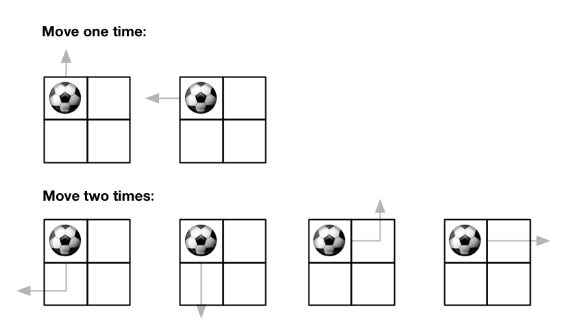
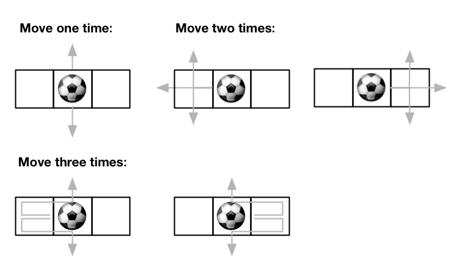

576. 出界的路径数
按步数分层 DP：dp[r][c] = 从 (r,c) 出发在剩余步数内出界的路径数；每步四个方向，出界 +1、界内抄上一层。
思路
- 定义
dp[s][r][c]= 从(r,c)走s步「第一次出界就终结」的路径数；答案就是dp[maxMove][start]。 - 转移看四个方向：走出界贡献 1 条（路径在此结束），走界内则继承
dp[s−1]邻格的值。 - 每层只依赖上一层 → 两张表滚动交换即可；4 个值累加可能超
int，用long再取模。 maxMove == 0时循环不执行，直接返回 0。
图解
最优解
1class Solution {2 public int findPaths(int m, int n, int maxMove, int startRow, int startColumn) {3 final int MOD = 1_000_000_007;4 int[][] dp = new int[m][n]; // dp[r][c]：从 (r,c) 出发、恰走 s 步内出界的路径数（s 为当前轮）5 int[][] next = new int[m][n];6 for (int s = 1; s <= maxMove; s++) {7 for (int r = 0; r < m; r++) {8 for (int c = 0; c < n; c++) {9 // 四个方向：走出界贡献 1 条；走界内就继承「少走一步」时那格的路径数10 long ways = r == 0 ? 1 : dp[r - 1][c];11 ways += r == m - 1 ? 1 : dp[r + 1][c];12 ways += c == 0 ? 1 : dp[r][c - 1];13 ways += c == n - 1 ? 1 : dp[r][c + 1];14 next[r][c] = (int) (ways % MOD);15 }16 }17 int[][] t = dp; dp = next; next = t; // 滚动：算完一层就交换两层表18 }19 return dp[startRow][startColumn];20 }21}题目
给你一个大小为 m x n 的网格和一个球。球的起始坐标为 [startRow, startColumn] 。你可以将球移到在四个方向上相邻的单元格内（可以穿过网格边界到达网格之外）。你 最多 可以移动 maxMove 次球。
给你五个整数 m、n、maxMove、startRow 以及 startColumn ，找出并返回可以将球移出边界的路径数量。因为答案可能非常大，返回对 109 + 7 取余 后的结果。
示例 1：

输入：m = 2, n = 2, maxMove = 2, startRow = 0, startColumn = 0 输出：6
示例 2：

输入：m = 1, n = 3, maxMove = 3, startRow = 0, startColumn = 1 输出：12
提示：
1 <= m, n <= 500 <= maxMove <= 500 <= startRow < m0 <= startColumn < n
题面取自力扣当前版本。
数据快照 2026-11-04。题面版权归力扣所有，本站点仅供本人学习使用，请勿对外发布。